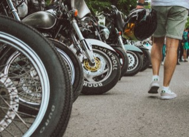
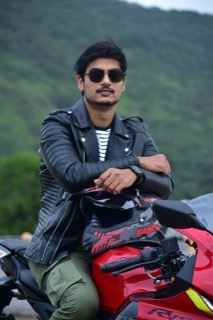
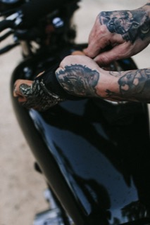
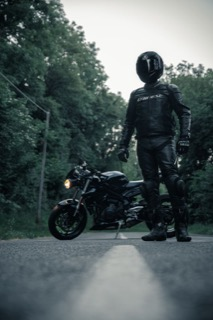
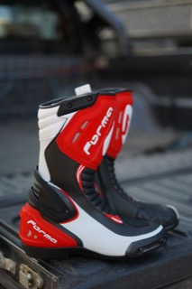
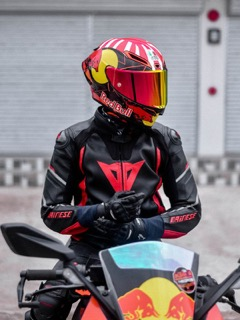
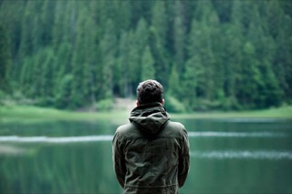
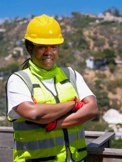

Doğru ekipman, olası bir kaza anında yaralanma riskini büyük ölçüde azaltır. İşte baştan ayağa gerekli koruyucu donanım.

En kritik koruyucu ekipmandır, kanunen zorunludur. Baş yaralanmalarının ciddiyetini büyük ölçüde azaltır.

Kayma ve sürtünmeye karşı cildi korur, sırt/omuz/dirsek koruyucularıyla darbe emer.

Refleks anında ilk temas eden yer genelde eller olur; eldivensiz düşmelerde el yaralanmaları çok yaygındır.

Kot pantolon kaymaya karşı yeterli koruma sağlamaz; özel motosiklet pantolonu diz ve kalça koruyuculu gelir.

Ayak bileğini burkulma ve darbeye karşı korur, sıradan spor ayakkabıdan çok daha güvenlidir.

Omurga ve göğüs bölgesini darbelere karşı korur, özellikle uzun yol ve yüksek hızlı sürüşlerde önerilir.

Ani yağışta hem görüşü hem sürüş konforunu korur, montun altına giyilebilen ince modeller pratiktir.

Yelek, bant veya çıkartma gibi reflektörlü eklerle özellikle gece ve düşük görüş koşullarında fark edilirliğini artırırsın.
Sürüş tekniklerini, trafik kurallarını ve eğitmen tavsiyelerini tekrar gözden geçirebilirsin.